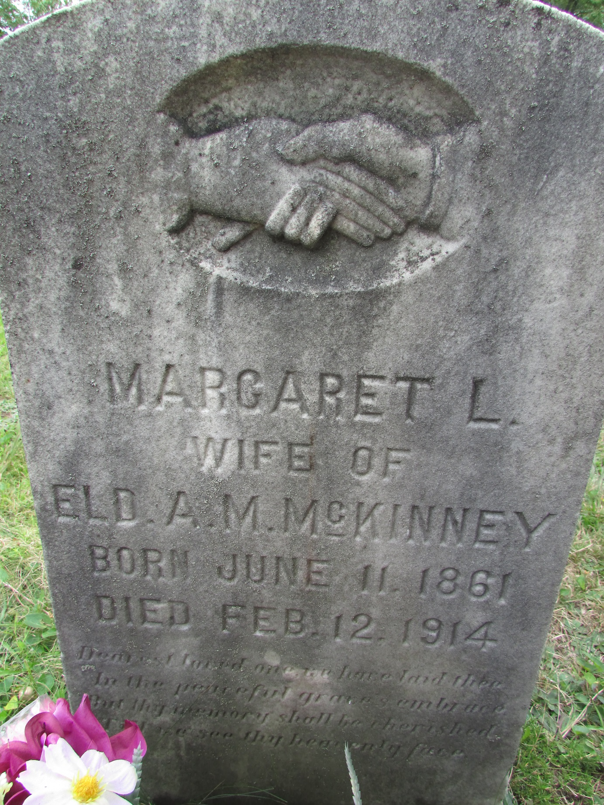

Basham line · Mercer County, Virginia (now West Virginia) → Ellison, Summers County, West Virginia
Profile status: SUPPORTED
Quick Facts
Born
11 June 1861, Mercer County, Virginia (now West Virginia) SUPPORTED (her marker reads June 11, 1861; four compilations and the 1900 census's June 1861 birth month agree — a WikiTree data field that once read July 11 contradicted its own profile's sources, and Tricia's tree gives 10 December 1861, Greenbrier, which is not adopted)
Died
12 February 1914, Ellison, Summers County, West Virginia SUPPORTED (her marker; Eli McKinney records and Allen's remarriage window agree; the 1914 death-register entry itself has not been pulled)
Buried
Ellison area — Find a Grave places her marker at Birchfield Cemetery, Ellison Ridge SUPPORTED (memorial 8909299; the register entry that would settle burial has not been pulled, and the couple profile notes Birchfield was shown for her daughter Elizabeth Jane's cemetery — flagged, not hidden)
Married
Rev. Allen Marshall McKinney — 1877, Wyoming County, West Virginia SUPPORTED (the year and county are carried on the trees; the exact day is conflicted four ways and the register image has not been read, so no day is carried — see Research Notes). Margaret married once.
Her parentage rests on her sister Arminta's marriage into this same family (Arminta Basham married Allen's brother Luke in 1876), her brother John Albert's records, and the 1860 Mercer County census household. No years are shown: Geni gives none usable. Their own profiles are built at their turn. Geni styles William “Veteran (Confederate States Army)”; his service detail belongs to his own pass.
Margaret married once. Geni also lists two plainly wrong extra spouse links on her profile — a surname-only “Basham” placeholder and a “Lawson Lawson” profile (added 9 June 2024, “Husband of Margaret Lucinda Basham”) — neither is carried here; the Lawson name plausibly confuses her with Allen's second wife. Nothing was detached on Geni in this pass.
Roster from Edgar Lee McKinney's family record: Margaret reported 15 children born, 9 living, in 1900 and 19 born, 11 living, in 1910; there were no twins, and eight of the nineteen died young. Geni lists a twentieth child, Shirley J McKinney, who is not in the folder roster and is not carried here — see Research Notes.
Full siblings as listed on Geni, except James Preston, whom the folder synthesis places as a half-brother: he was William Blaine Basham's son by his first wife, Mary Elizabeth Peters, not Julina's son. Julia Ann Shrewsbury and Nancy Jane Clendenen are Geni's half-sibling listings. Geni lists Elizabeth Louisa “Lizzie” Shrewsbury as both a full and a half sister — carried once here, as a full sister. William's two families are settled at his own pass.
11 June 1861 · age 0 Born in Mercer County, Virginia (now West Virginia), daughter of William Blaine Basham and Julina Lydia Lilly SUPPORTED (her marker; compilations; the 1900 census's June 1861 birth month)
1877 · age 15–16 Married Allen Marshall McKinney, Wyoming County, West Virginia SUPPORTED (year and county on the trees; the day is conflicted — see Research Notes)
1878–1906 Nineteen children born, eight of whom died young SUPPORTED (Edgar Lee McKinney's family record; 15 born, 9 living, in 1900; 19 born, 11 living, in 1910)
1881 Son Wesley born at Basin — the direct line DOCUMENTED (see his page)
12 February 1914 · age 52 Died at Ellison, Summers County SUPPORTED (her marker; Eli McKinney records)
Life Story
Margaret Basham was born on 11 June 1861 in Mercer County, Virginia — now West Virginia — the daughter of William Blaine Basham and Julina Lydia Lilly. Her parentage is carried on her sister Arminta's marriage into the same family — Arminta married Allen's brother Luke in 1876 — her brother John Albert's records, and the 1860 Mercer County census household.
In 1877, aged fifteen or sixteen, she married Allen Marshall McKinney of Wyoming County. Nineteen children were born to them between 1878 and 1906; eight died young. Their third child, Wesley, born in 1881, carries the direct line forward. No occupation is recorded for Margaret, and no photograph of her was known in the folder until her Find a Grave memorial portrait, shown here, was pulled in this pass.
Margaret died on 12 February 1914 at Ellison, aged fifty-two. Her marker reads “Margaret L., wife of Eld. A. M. McKinney, born June 11, 1861, died Feb. 12, 1914.” Allen married again that August. The “Lucinda” sometimes attached to her name on the trees — “Margaret Lucinda Basham” — is not used on this page: it appears to conflate her with Allen's second wife, Lucinda.
Gallery

Her marker: “Margaret L., wife of Eld. A. M. McKinney, born June 11, 1861, died Feb. 12, 1914.”
Sources and Evidence
Her marker (photograph on Find a Grave memorial 8909299, read with my own eyes): “Margaret L., wife of Eld. A. M. McKinney, born June 11, 1861, died Feb. 12, 1914,” with a clasped-hands carving SUPPORTED
Find a Grave memorial 8909299, Margaret Lucinda Basham McKinney: born 11 June 1861, died 12 February 1914; burial given as Birchfield Cemetery, Ellison Ridge SUPPORTED
Edgar Lee McKinney's family record: the nineteen-children roster, carried in the couple profile SUPPORTED
Census counts: 15 children born, 9 living, in 1900; 19 born, 11 living, in 1910 SUPPORTED
Her husband's West Virginia death certificate, Registration No. 9932, Raleigh County, filed 11 July 1938 (image on Find a Grave memorial 8909294, read with my own eyes): Allen Marshall McKinney, died 2 June 1938, Beckley — confirms the marriage's end and the family frame DOCUMENTED
Geni profiles, click-verified 4 November 2026: Margaret (born 11 June 1861, died 12 February 1914), her parents William Blaine Basham and Julina Lydia Lilly, her listed siblings, and the twenty listed children shared with Allen SUPPORTED
Tricia's Shamblen/McKinney Family Tree, Ancestry tree 44342901 (Contributor access, 4 November 2026): “Margaret Lucinda Basham” (person 6189642063), born 10 December 1861, Greenbrier, died 12 February 1914, Ellison; parents William Blane Basham and Julina Lydia Lilly; only Allen as spouse; only Wesley shown as a child; gallery empty SUPPORTED
Couple research notes: the 3 October 2026 dig synthesis (Margaret's birth-month angle, children's date grades, William Blaine Basham's first marriage) and the 22 October 2026 grab-sweep findings SUPPORTED
Research Notes and Open Questions
Grades on this page: DOCUMENTED means an original record was read (her husband's death certificate, read as an image); SUPPORTED means a claim attested by filed research — her marker photograph, the family record, Geni checks, the Ancestry tree — but not by a register read here.
Name: this page uses “Margaret Basham.” Geni, Find a Grave, and the Ancestry tree carry her as “Margaret Lucinda Basham.” The Lucinda form is not used here: it appears to conflate her with Allen's second wife, Lucinda Aveline “Siney” Lawson (Mann), whom Allen married after Margaret died in 1914 — see Allen's page. The Each Generation page still displays her as 'Margaret Lucinda Basham'; that display text is linked, not renamed.
Birth month and place: the page carries 11 June 1861, Mercer County — her marker reads June 11, 1861, four compilations and the 1900 census's June 1861 birth month agree, and a WikiTree data field that once read July 11 contradicted its own profile's sources (June) and reads as a data-entry slip. Tricia's tree gives 10 December 1861, Greenbrier — not adopted. Geni gives Wyoming County as her birthplace — the records say Mercer. Her 1914 death-register entry, which would settle the month by age in years, months, and days, sits on a FamilySearch film (Summers County deaths 1871–1968) and has not been pulled.
Marriage day: four forms conflict — 27 February 1877 (Edgar Lee McKinney's family record and a family compilation), 2 March 1877 (the Darnell family sheet), 27 July 1877 (a USGenWeb transcription of the Wyoming County register naming J. H. Cook as officiant), and 27 March 1877 at Odd in Raleigh County (FamilySearch from other contributors). The county register image has not been read, so the page carries the year and county only.
Burial: Find a Grave places her marker at Birchfield Cemetery, Ellison Ridge; that cemetery attribution is Find a Grave-level. The couple profile notes Birchfield was shown for her daughter Elizabeth Jane's cemetery and calls Margaret's burial unverified — that caution stands until her 1914 register entry is pulled, and is not hidden here.
Spouses on Geni: Margaret married once. Geni's two extra spouse links — a surname-only “Basham” placeholder and a “Lawson Lawson” profile added 9 June 2024 — are plainly wrong and are not carried; the Lawson name plausibly confuses her with Allen's second wife. Nothing was detached on Geni in this pass.
Children: the roster follows the folder (nineteen). Geni lists a twentieth child, Shirley J McKinney, who is not in the folder roster and is not carried here. Wesley is the direct line; his own page carries his record-level dates.
Siblings: Geni's full/half split is inconsistent — it lists Elizabeth Louisa “Lizzie” Shrewsbury as both a full and a half sister (carried once here, as a full sister), and it lists James Preston Basham as a full brother, while the folder synthesis places him as a half-brother (William Blaine Basham's son by his first wife, Mary Elizabeth Peters). William's two families are settled at his own pass.
Ancestry tree conflicts, not adopted: the tree gives her birth as 10 December 1861, Greenbrier; shows only Wesley of the nineteen children and no siblings; and shows no second wife for Allen. The tree's Wesley profile (married Lona Jane Lilly in 1907, died January 1966 at Ellison) conflicts with the folder's Wesley (married Genettie Ellen Canaday in 1900, died 21 September 1966 at Phoenix) and is not carried beyond this flag.
Find a Grave photographs: her portrait and marker photographs were pulled and filed in the couple folder in this pass. Allen's Register Herald obituary photograph could not be pulled on 4 November 2026 because Find a Grave blocked the browser; it remains to be retrieved.
Open items: (1) Her 1914 death-register entry (FamilySearch film) — settles her birth month, burial, cause, and informant. (2) The 1877 Wyoming County marriage register image — settles the day. (3) Linda Birchfield's article on Margaret in Mercer County History (1987) — the strongest unexploited Margaret lead.
No twins among Allen and Margaret's children, by the census counts and the family record.
Photographs: the couple folder also holds five contextual place photographs and two portraits filed with a provenance note — a Dumire family portrait and an unidentified young woman from the WVU archive — which are NOT Allen and Margaret and are never captioned as them. The portrait shown here is her Find a Grave memorial portrait.
Profile history: Created 4 November 2026 from the family couple profile and research notes.